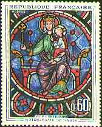
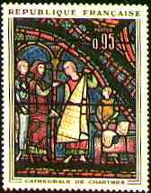
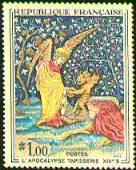
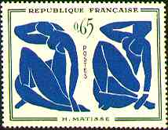
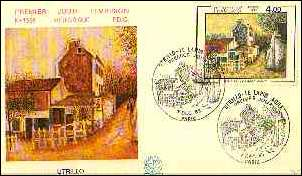
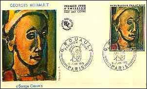

The French Art Series (also known under the name Musée imaginaire - Imaginary Museum) started in 1961 with a set of four stamps, reproducing the works of Braque, Matisse, Cezanne and R. de la Fresnaye. Using a big format (36.85 x 48 mm) and characterized by an excellent typographic quality (printed for the first time in such a big format in TD6 = taille-douce six couleurs), this series gave the start of a new era in the domain of the reproduction of art on stamps. In over 35 years of existence, all areas were covered, from cavern paintings in Lascaux (SG 1786) and Egyptian Art (SG 2111) to the contemporary artists, who created works to be reproduced on the postage stamps. Now let the stamps speak for themselves and let’s enjoy their perfection.
Stained Glass Windows
1964 Notre-Dame, Paris, 1965 Sens Cathedral, 1966 Sainte Chapelle, 1963 Chartres Cathedral.




Email and Tapestries
1964 Email Champleve, 1964 La dame a la licorne, 1965 L'apocalypse, 1966 Lurcat tapestry




Classical Period
1962 Th. Gericault, 1963 E. Delacroix, 1973 J. A. Watteau, 1972 J.H. Fragonard.


Modern Period - 1
1979 V. van Gogh, 1961 H. Matisse, 1961 P. Cezanne, 1968 A. Renoir.




Modern Period - 2
1970 E. Degas, 1968 E. Gauguin, 1965 R. Dufy, 1963 M. Chagall.


First Day Covers
3/3/83 Paris - Utrillo (Le Lapin Agile), 6/5/71 Paris - Rouault (Songe Creux).

